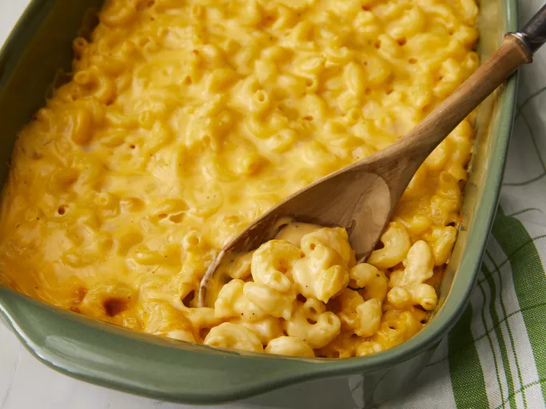

Mac-and-Cheese Recipe

Delicious homemade Mac-and-cheese
Ingredients
- 8 oz (about 2 cups) elbow macaroni
- 2 tablespoons butter
- 2 tablespoons all-purpose flour
- 2 cups milk
- 2 cups shredded cheddar cheese
- Salt and pepper to taste
Instructions
- Cook the elbow macaroni according to package instructions in salted boiling water until al dente. Drain and set aside.
- In a large saucepan, melt the butter over medium heat.
- Once the butter is melted, whisk in the flour to make a roux. Cook for 1-2 minutes until it turns lightly golden.
- Gradually whisk in the milk, stirring constantly to avoid lumps. Cook until the sauce thickens, about 5 minutes.
- Reduce the heat to low and stir in the shredded cheddar cheese until melted and smooth. Season with salt and pepper to taste.
- Add the cooked macaroni to the cheese sauce, stirring until the macaroni is evenly coated.
- Optional: For a crunchy topping, transfer the mac and cheese to a baking dish, sprinkle breadcrumbs on top, and broil in the oven for a couple of minutes until golden brown.
- Serve the mac and cheese hot, garnished with chopped parsley if desired.
- Enjoy your creamy and delicious homemade mac and cheese!